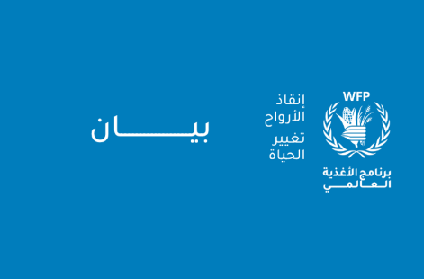

تقرير للأمم المتحدة تفاقم الجوع في 13 بؤرة ساخنة..
وخطر الموت جوعاً يهدد خمساً منها

بيان بشأن حادث قافلة شمال غزة
بيانات صحفية

الحرب في أوكرانيا: كيف يساعد البرنامج صغار المزارعين في أعقاب القصف
قصة

اللاجئون الفارون من السودان يواجهون تفاقم الجوع وسوء التغذية مع تهديد بتخفيضات كبيرة في المساعدات الغذائية
بيانات صحفية